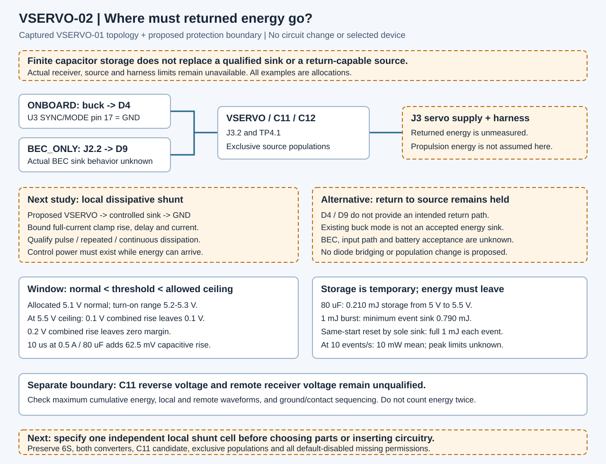

Where does returned energy go?
Separate the clamp voltage window, temporary capacitor storage and the energy a local sink must ultimately remove. Explore allocated examples while the actual source and receiver envelopes remain unknown.
VSERVO-01 remains the latest isolated native candidate. A local dissipative shunt is proposed for further specification. No positive-voltage, reverse-voltage, thermal or hardware acceptance is established.
Actual envelopes: unavailable
Missing values stay unavailable. The examples below do not fill these records or approve a part.
Show the missing actual inputs
1. Is there a usable clamp voltage window?
The clamp must stay inactive during normal operation and hold the local rail below its allowed maximum while carrying current. Both margins require a strictly positive value.
Turn-on is not full-current clamping voltage. The combined-rise allocation must include loaded clamp I–V/regulation, response delay, ESR/inductance and local path effects. It is not derived from the delay example alone.
Off margin = turn-on minimum − normal maximum
Protection margin = allowed maximum − turn-on maximum − all remaining rise
2. What must the local sink remove?
Use a positive residual energy burst after other accounted paths, with no later absorption or recovery offset inside that burst. Do not count harness energy twice.
The event minimum is an endpoint lower bound. A later energy balance can hide an earlier peak. Peak closure requires the maximum cumulative energy excursion and its time waveform.
Storage cannot be credited again on each event while also assuming the rail returns to the same starting voltage. Average power does not qualify pulse power, safe operating area or thermal recovery.
Storage = ½ C × (ceiling² − start²)
Event sink lower bound = max(0, residual burst − storage)
Restored-event average = residual burst × event rate
3. Delay adds rail rise
Fixed allocation: constant net capacitor return current before the clamp responds.
This capacitive rise omits ESR and inductive peaks. It is one contribution to the combined voltage-rise budget, not the whole budget.
4. Keep the lower boundary separate
C11 must remain nonnegative across its own terminals. The remote receiver has a separate minimum voltage relative to its own return.
Zero margin; not physical acceptanceActual remote and reverse-voltage envelopes remain unavailable. A local positive clamp does not bound remote overshoot, negative ringing or ground offset.
Trace the proposed energy paths

Both converters, exclusive ACT-01 source populations and default-disabled permissions remain preserved. This packet has zero candidate/live electrical or copper change.
Next: specify one independent local shunt cell
Close its source/receiver envelope, full-current clamp window, control-power behavior, current authority, pulse and repetitive dissipation, failure states and remote terminal limits before choosing components.
All model limitations
Read the full boundary and evidence plan · Inspect calculated results